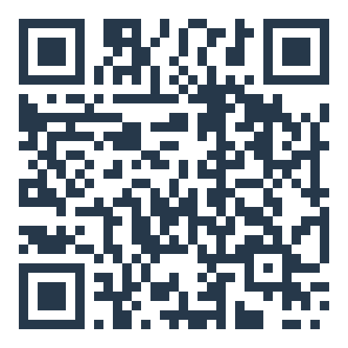

La carte de visite NFC
Une carte qu'on approche du téléphone — le QR au dos en repli. Elle ouvre le site, la réservation et le contact en un geste. Format carte bancaire : 85,6 × 54 mm, recto-verso, prête à imprimer.
Recto
Brasserie · Friterie · Maubeuge
Verso
Le Saint Lazare
Brasserie · Friterie
15 Route d'Avesnes, 59600 Maubeuge
03 27 64 43 10
le-saint-lazare.fr

Réserver · Commander
Voir la carte
Voir la carte
Carte sans contact — approchez votre téléphone
À l'impression, chaque face sort sur sa propre page au format exact 85,6 × 54 mm (fond perdu à prévoir avec l'imprimeur). Démonstration Everywhere — puce NFC encodée à la fabrication.